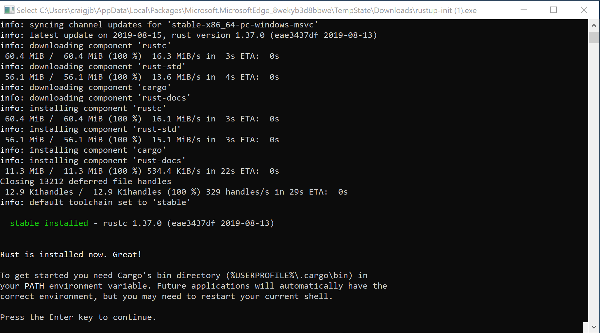
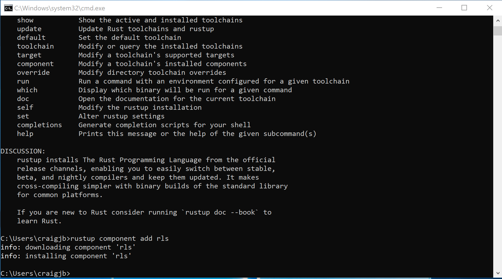
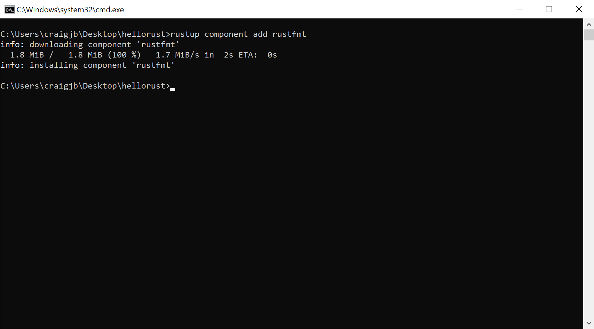
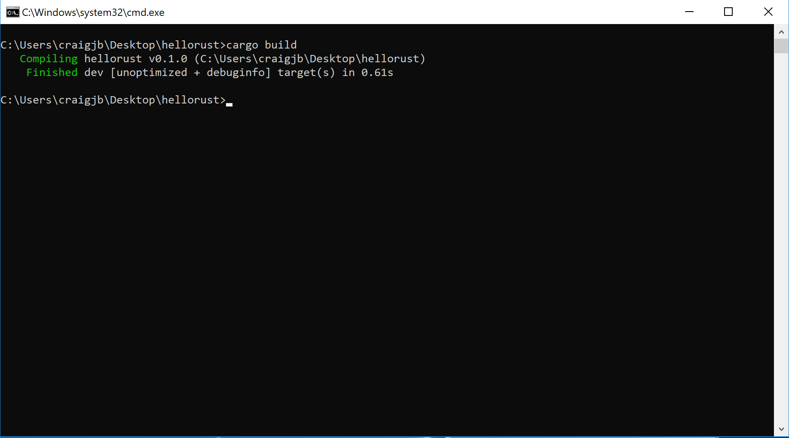
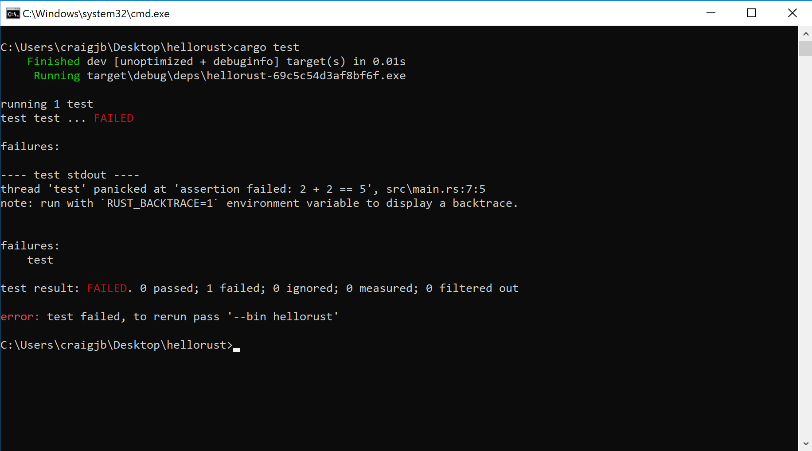
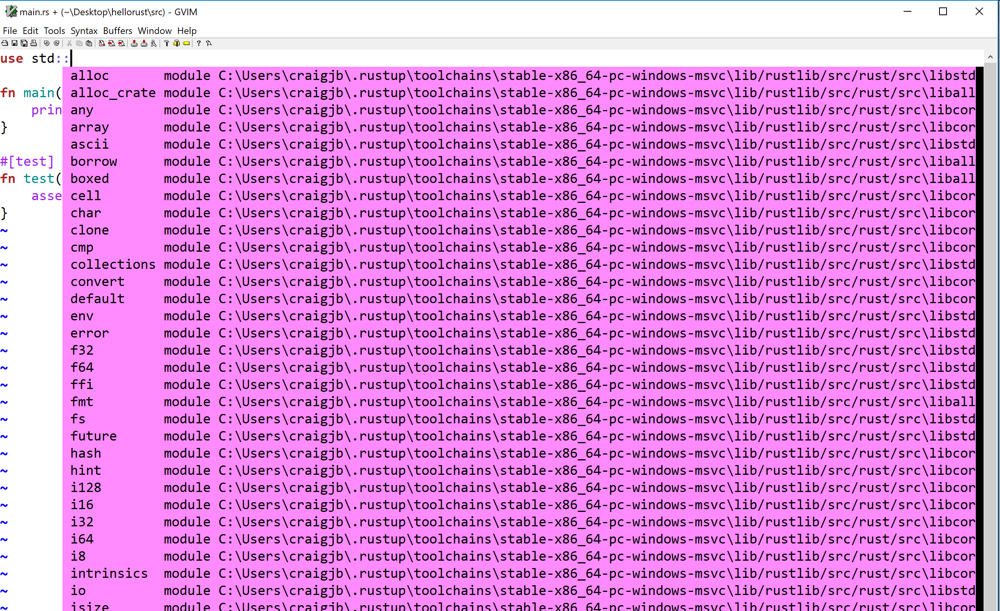

Rust is a safe, typed, compiled, general programming language.
- Safe is a very overloaded term in Rust, but by default Rust uses static analysis at compile time to enforces rules about memory usage. Traditionally, managing your own memory in languages like C++ and Objective-C has been very tedious and still error prone. Rust's solution to this, The borrow checker, is probably the defining feature of the Rust language. You have to spend a little more time annotating your code to say who owns a variable at any given time with the borrow checker keeping you honest the whole time. It's like pair programming with a friend.
- Typed - As opposed to languages like javascript, Rust forces you to state the types of variables going into and out of functions. This helps you organize your intentions and acts much like a set of tests to make sure your code makes sense.
- Compiled - Rust has to do all its work up front at compile time and turns into a binary immediately. Compiles can be slow sometimes, but our code runs fast, and anywhere, as a result. obligatory xkcd
- General. Much like most modern languages these days it's not strictly functional or object oriented (OO). Further it can be deployed almost anywhere. We can write backend server code, embedded microcontroller applications, and with WASM, even front end web applications, cloud functions and blockchains.
Our audience are professional developers cross training from languages such as C, C++, Python and Golang.
We will build on and link heavily to the Rust Book and Standard Library documentation but if you ever get lost you should take it upon yourself to head back there to find clarification. A huge part of why Rust is so powerful is its evolving, responsive, tested, up to date and clear documentation. Many thanks to the tireless authors of those resources.
Installing Rust on Windows
This guide will cover:
Installing Rust with Rustup
-
Visit rustup.rs, download, and then run rustup-init.exe

-
Make sure you have the dependencies met. The Rust installation includes the Rust compiler, but Rust uses the system linker to create the final executables and link to system shared libraries (DLLs). So, we have to make sure a usable linker and system libraries are installed.
- If you already have one of the listed Visual Studio versions installed with C++ build tools, the dependencies should be met already
- If later you get an error about "Link.exe", follow step 2
- Otherwise, install these:

- If you already have one of the listed Visual Studio versions installed with C++ build tools, the dependencies should be met already
-
Press
1and thenenterto proceed with the installation
-
Once the installation is complete, the below message should show. Press
enterto close the window.
-
Test the rustup installation:
- Open a new command prompt window
- Run the command
rustup. The command should show help information.

- If the
rustupcommand fails, add%USERPROFILE%\.cargo\binto yourPATHenvironment variable.
-
Install the Rust Language Server (RLS):
- Open a command prompt window (you can reuse the same window)
- Run the command
rustup component add rls. The command should download and install the RLS.

- Install the rustfmt component by running the command
rustup component add rustfmt

Test out the Rust installation
-
Open a command prompt window
-
Navigate to a directory wherein we will create a test project.
-
Run the command
cargo new --bin hellorustto create a new project named "hellorust".- Cargo is the Rust build system and package manager.
- The
--binargument means we are creating a binary project that builds an executable. - We can also create a crate (Rust's name for libraries) by passing the
--libargument. - The
cargo newcommand creates a new directory named "hellorust" and creates the default Rust project directory structure
hellorust - src - main.rs - Cargo.toml - Cargo.lock - target- The
srcdirectory contains the project's Rust source code files Cargo.tomlcontains the project configuration used by Cargo to build the project. This file includes dependencies, build configurations, metadata, and more.Cargo.lockis generated by Cargo and contains the "locked" or exact versions of the dependencies used to build your project. This file should not be edited.- The
targetdirectory contains the build products generate by Cargo. For a binary project, the exectuable will usually be attarget\debug\hellorust(ortarget\release\hellorust).
-
Navigate into the "hellorust" directory
-
Build the project by running the command
cargo build- By default, Cargo will build the project in the debug configuration
- You can build the release configuration with the command:
cargo build --release - If you see an error about "Link.exe", make sure the installation dependencies are met (detailed in the installation section above)

-
Run the project with the command:
cargo run- This command will also build the project if your build is out-of-date
- By default,
cargo runbuilds and runs the debug configuration. You can run the release configuration with:cargo run --release. - Arguments after
cargo runare passed to Cargo (for example the--releaseargument). If you want to pass arguments to your program, put them after a--delimiter. For example:cargo run --release -- my args here

-
Many Rust projects include automated tests. Cargo can run these tests with the command
cargo test(--releaseworks here too). To try out Rust tests, we can modifysrc/main.rsto contain a simple failing test:- Modify
main.rs:
fn main() { println!("Hello, world!"); } #[test] fn failing_test() { assert!(2 + 2 == 5); }- Run the tests with
cargo test

- Modify
Configuring GVim 8.x for Rust with the RLS
The steps below configure GVim 8.x on Windows to support Rust and use the Rust Language Server (RLS) for autocompletion.
-
Make sure you have a working Git installation. (Download Here for Windows)
-
Visit https://rls.booyaa.wtf and follow the steps for your preferred Vim package management strategy.
-
Modify your vimrc to include the below snippet. The guide linked in the previous step is still configured to use the Rust nightly build, since the RLS used to only be available in the nightly builds. RLS is now available in stable, and we installed stable Rust (the default). The below snippet should replace the one from the linked guide, and changes the 'cmd' to use stable instead of nightly.
if executable('rls') au User lsp_setup call lsp#register_server({ \ 'name': 'rls', \ 'cmd': {server_info->['rustup', 'run', 'stable', 'rls']}, \ 'whitelist': ['rust'], \ }) endif -
Make sure
filetype plugin indent onandsyntax enableare also in your vimrc -
Restart GVim or reload your vimrc
-
Open a Rust file and test our autocompletion (for example start typing
use std::)
Configuring VS Code for Rust with the RLS
The steps below configure VS Code on Windows to support Rust and use the Rust Language Server (RLS) for autocompletion and incremental compilation to display warnings and errors.
-
Install the Rust (rls) extension by user 'rust-lang' in VS Code. There are several other plugins, but this one is the most maintained.
-
Reload the window in VS Code, or restart VS Code
-
If you see an error message that the RLS could not be started or that the extension could not find rustup, then you will have to configure VS Code's path for rustup:
-
Open VS Code preferences and navigate to the Rust extension preferences
-
Modify the rustup path to use an absolute path to your installation:
C:\Users\<username>\.cargo\bin\rustup
-
Reload the window in VS Code, or restart VS Code
-
You may see a prompt in the lower-right to install the RLS. If so, click yes.
-
-
Open a Rust file and test out the RLS:
- Try autocompletion (for example start typing
use std::) at the top of a file - Try the incremental compilation (for example
println!("Hello, world!") blah blah 42 42should show an inline error)

- Try autocompletion (for example start typing
anatomy of Rust program and some workflow
We’ve got a few tools to get to know
- rustup - manage tools and versions of toolchains
- rustc - rust compiler
- cargo - manage modules locally and remotely and drives rustc
Open a terminal and create a new package with cargo new training and go to that directory with cd training
Now we have a Cargo.toml which defines our project, not unlike a package.json if you're familiar with Node.js, it defines dependencies we're using and other project information:
[package]
name = "training"
version = "0.1.0"
authors = ["First Last"]
edition = "2018"
[dependencies]
In src folder we have main.rs, a Rust file. In this case it generated a simple hello world.
fn main() { println!("Hello, world!"); }
We're starting to get some syntax for you. Notice functions are denoted fn, we use semicolons to end expressions, and the exclamation after println!() means that is a function-like macro. We'll talk more about macros later.
Generally we'll interact with the compiler via Cargo. Cargo drives the rustc compiler and linker all under the hood. We can cargo build or better yet cargo run and save ourselves a step:
$ cargo run
Compiling training v0.1.0 (/Users/firstlast/training)
Finished dev [unoptimized + debuginfo] target(s) in 0.50s
Running `/Users/firstlast/.cache/target/debug/training`
Hello, world!
The default build directory is target, and by default we got a debug build
$ ls target/debug/
build examples native training.d
deps incremental training training.dSYM
Note, we could run or debug that built asset directly:
./target/debug/training
Hello, world!
Also note, we could have compiled this simple file with the rustc compiler directly
$ rustc src/main.rs
$ ./main
Hello, world!
However in practice almost no projects are single files require merging multiple modules from within our project and without and thus Cargo is THE way we interact with Rust.
primitive data types
We’ve got all the datatypes you would expect but you might want to glance through the Rust book chapter on variables, functions, and control flow just to update your mental models to Rust notation
We have signed and unsigned scalar types like u32 and i32 and we've got Strings. Variables are instantiated with let syntax, and notably are immutable by default.
The top of the Rust standard library page has a search box. Entering String there we find std::string::String with a bunch of example usage right there for us. You can edit those examples and run them right in your browser to confirm your understanding and even click the [src] link in the upper right corner and be taken straight to the Rust implementation.
While you totally can thrash around on stack overflow, and we all do, there really is an authoritative source that you should check first.
From that example we have our String constructor:
fn main() { let input_path = String::from("cat.jpg"); println!("Hello, world!"); }
First, note we don’t need to import anything (we call it use) to use this type. A portion of the standard library is in our namespace automatically, which we call the prelude. Basically Rust puts use std::prelude::v1::*; at the top of your file and you get access to those members. By no means is everything in there, but a lot is, which is what kept you from explicitly writing use std::string::String at the top of your file in this case.
Also notice we didn't have to explicitly type our variable. What Rust can figure it out, it will and so its entirely idiomatic to omit type annotations. However if you or the compiler are having trouble or getting odd type errors, start annotating some of your types like to see if you can give the compiler a hand. Its also a great way to figure out what type you actually have in case you're not sure, let the compiler (or linter) tell you.
fn main() { let input_path = String::from("cat.jpg"); let output_path:String = String::from("test.png"); println!("Hello, world!"); }
So now how to print those variables to console. In Rust our printf % formatting character is {}. Following the println!() documentation down the rabbit hole will send us to the formatters section page and we find all the formatters which you would expect like hex {:x}, binary {:b}, etc. We're going to focus on the 'empty' Display formatter {} for now which is a kind of a pretty printer in Rust. As long as whomever wrote our type implemented the Display pretty printer trait this will work great (cue ominous music).
fn main() { let input_path = String::from("cat.jpg"); let output_path = String::from("test.png"); println!("{} {}", input_path, output_path); }
Running this we find that we do have a Display implementation for String and pretty printing results in rather clean output in this case:
cat.jpg test.png
Objects, we call them structs, should be very familiar. You can define a new struct in any scope you like and we can name and type their members.
struct Opt { input_path: String, output_path: String, } fn main() { let options = Opt { input_path: String::from("cat.jpg"), output_path: String::from("test.png"), }; println!("{} {}", options.input_path, options.output_path); }
Notice we access our struct members with dot notation, and there is no default new constructor or overloading in Rust. Though in practice, for functions where it makes sense many developers will offer and occasionally make their struct private to require the usage of a new or other constructor. So note, String::new() totally exists and would have made you an empty string.
Lets start modularizing our main by putting our options creation in a function. Function syntax is just like we see in the main function, but can return an expression from a function by leaving off the semicolon and annotating the return type:
struct Opt { input_path: String, output_path: String, } fn options() -> Opt { let options = Opt { input_path: String::from("cat.jpg"), output_path: String::from("test.png"), }; return options; } fn main() { let options = options(); println!("{} {}", options.input_path, options.output_path); }
We use semicolons to end expressions. We prefer to leave off semicolons in order to implicitly return the expression saving us the temporary variable like so:
fn options() -> Opt {
Opt {
input_path: String::from("cat.jpg"),
output_path: String::from("test.png"),
}
}
But what if our options creation could fail? Lets talk about error handling in rust.
options and results
Let's take our config options from the command line with runtime args instead of hard coding it at compile time. Search the standard library for args finds args come in as a iterator of a collection. We'll talk about iterators later, but for now we can for loop over them, or get the nth() value. Just like C command line args the 0th argument is the name of the binary and the rest are your arguments.
use std::env; // explicit use (import) finally
fn options() -> Opt {
Opt {
input_path: env::args().nth(1).unwrap(),
output_path: env::args().nth(2).unwrap(),
}
}
And then note you can pass args around cargo to the binary were trying to run like:
$ cargo run -- cat.jpg test.png
Finished dev [unoptimized + debuginfo] target(s) in 0.01s
Running `target/debug/training cat.jpg test.png `
target/debug/training
cat.jpg
test.png
So what is this unwrap. The problem is the nth argument may or may not be there..
We have two related types commingled in error handling in Rust.
Rust doesn’t have exceptions, but rather the Result type which can be used to propagate either the error or the result and looks like this:
pub enum Result<T, E> {
Ok(T),
Err(E),
}
And Rust doesn't have Null but rather the Option type which can be used to propagate either the value (Some), or the lack of one (None)
pub enum Option<T> {
None,
Some(T),
}
Were going to skip Result here, as our nth() method returns an Option, but they’re very similar in how they’re handled as they’re both implemented as enums. We basically have three possibilities for dealing with both:
Option 1, panic! unwrap and expect
There is a minimal runtime in Rust, which means if were not careful we can and will blow up at runtime. This is called a panic and is handled in the panic handler, which on hosted platforms includes unwinding and backtraces. Run our program again, this time not passing arguments
thread 'main' panicked at 'called `Option::unwrap()` on a `None` value', src/libcore/option.rs:347:21
note: run with `RUST_BACKTRACE=1` environment variable to display a backtrace.
Explicitly panicing like we see above may very well be an option when the error is unrecoverable anyway like in examples like this where theres nothing intelligent we can do except maybe try to print a decent error message. If the error message needs help well often well use .expect("Please enter an image file as the first option to this program") instead of unwrap() in order to further refine the message.
Option 2, return it
Another option is to make it someone else’s problem by simply handing the Option or Result back up the chain.
Theres even an exit early helper for this, the ? operator. This was previously the try! macro but that has been deprecated though you may still see it in code.
Our nth() is an Option of Some or None so lets just hand an optional back up the chain to our main function. At least this way we can decide what to do with it there.
fn options() -> Option<Opt> { //<-return Option wrapping our Opt struct
Some(Opt {
input_path: env::args().nth(1).expect("first argument input file"),
output_path: env::args().nth(2).expect("second argument output file"),
})
}
But now we've made it main's problem to deal with. Its silly but in this case, lets just unwrap there anyway. Were back to just blowing up, but at least our deep nested library or function call isn't blowing up, our top level binary is.
let options = options().unwrap();
option 3, handle it
Someone has to do some control flow on this error somewhere.. Well thats actually not true, we can even return these from the main function where Rust will unwrap them behind the scenes and print the result.
But generally if you can do control flow on your errors you should. The way we often do that is through matching or combinators.
So we often will exhaustively match them with match pattern which is very similar to an exhaustive switch statement.
You could write it this way, revealing the options if they exist, and doing some control flow like explicitly panicing if they don’t:
//let options = options().unwrap();
if let options = match options() {
Ok(options) => options
Err(error) => panic!(error),
};
println!("{} {}", options.input_path, options.output_path);
The Option type is actually an enum type so we lets take a full digression through enums and matching in the next section.
error handling playground
Its worth spending some time in the option result playground here to get your mind around all this
use std::io::ErrorKind; fn main() { let first_arg = Some("cat.jpg"); let second_arg: Option<String> = None; let good_val: Result<u32, std::io::ErrorKind> = Ok(22); let definately_error: Result<u32, std::io::ErrorKind> = Err(ErrorKind::Other); first_arg.unwrap(); good_val.unwrap(); //second_arg.unwrap(); // no good //matching is exaustive in order match first_arg { Some(val) => println!("first_arg: {}", val), None => { // you can block scope in here and do as much as needed println!("third_arg"); println!("oops") } } // as we've said, results are similar, just two different variants match definately_error { Ok(val) => println!("cant image how we got here: {}", val), Err(e) => println!("{:?}", e), }; // the revealing/destructuring pattern is really handy occasionally if let Some(val) = first_arg { println!("Gotem {:?}!", val); } // theres also a ton of combinators if good_val.is_ok() && definately_error.is_err() { println!("some convoluted example here"); } }
traits
But hey this seems wordy, lets just print our whole struct in one formatter.
//println!(
// "input_path:{} output_path:{}",
// options.input_path, options.output_path
//);
println!("{}", options);
Running this results in:
error[E0277]: `Opt` doesn't implement `std::fmt::Display`
--> src/main.rs:14:20
|
14 | println!("{}", options);
| ^^^^^^^ `Opt` cannot be formatted with the default formatter
|
= help: the trait `std::fmt::Display` is not implemented for `Opt`
= note: in format strings you may be able to use `{:?}` (or {:#?} for pretty-print) instead
= note: required by `std::fmt::Display::fmt`
error: aborting due to previous error
For more information about this error, try `rustc --explain E0277`.
error: Could not compile `training`.
To learn more, run the command again with --verbose.
Thats actually really rather helpful error with a several ideas for fixing it. AND in this case if say you're offline and can't google for more information it even has another page or two of content if you run the rustc --explain E0277 command it mentions!
The compiler in Rust is almost always, really, actually, trying to tell you whats wrong, AND how to fix it. And if you find a case where it is not the Rust community would likely want to know how to make that error and the resulting action you should take more clear.
For this exercise we choose to manually implement the Display trait.
In Rust we stress composition over inheritance using traits. Traits, much like header files, separate the definition from the implementation. Before we solve our actual Display problem by consuming someone else’s trait definition, lets make a convoluted example to illustrate the syntax. We'll make a silly trait that has one function so that println! SHOUTS our filenames.
// create the new trait which has one function, shout
pub trait Shout {
// we automatically get passed whatever variable function is called
// on as the first argument to the function, we generally call it self
fn shout(self);
}
// now implement the new trait you made
// since we're impl for Opt, self is an Opt and we have access to
// input_path and output_path
impl Shout for Opt {
fn shout(self) {
println!(
"{} {}",
self.input_path.to_uppercase(),
self.output_path.to_uppercase()
);
}
}
Now anytime this trait is in namespace, which in our case it is because it defined in this same file, it is available on all instances of Opt. Lets call it:
//println!("{}", options);
options.shout();
and well should see something like
CAT.JPG TEST.PNG
The separation of definition from implementation is incredibly powerful. This way if we make our trait public anyone downstream can customize our function for their architecture or edge case. This keeps Rust from amongst other things passing around huge config structs full of lifecycle callbacks and other configuration overrides.
OK. So we can comment out our toy shout example and go back to fixing Display error. As a reminder it said
= help: the trait `std::fmt::Display` is not implemented for `Opt`
Looking in the std documentation we find Display which shows us an example like below. Recall when we implement traits, the function definition was set in stone by the trait. In this case they pass us self (whatever type this method was called on, in this case Point, in our case Opt) and a second arg name f which well use the write! (just like println! except it sticks the output in its first argument) to print into.
Again we want to be able to call
println!("{}", options);
My result looks like
(cat.jpg, test.png)
We're really only responsible for the returning something from the method. In the case of the Display trait that freedom largely pertains to the format string and which args we choose to print. So swap out these Point things for our Opt stuff.
use std::fmt;
impl fmt::Display for Point {
//Were still punting on the & and &mut but it doesn'nt matter here as the function definition is set in stone by the trait
fn fmt(&self, f: &mut fmt::Formatter) -> fmt::Result {
write!(f, "({}, {})", self.x, self.y) // notice no semicolon, were just passing the Result back
}
}
And with that you've:
- created a new type and defined and implemented traits for it
- implemented a trait you didn’t own.
- but there's a third case you'll come across which is wanting to implement a trait you don't own on a type you don't own.
For various reasons, the compiler can't reason about these 'orphan rules' and doesn't allow them. There are many ways around the limitation including forking the underlying crate and overriding dependencies with Cargo patch functionality as well as the newtype pattern.
external dependencies, crates.io
Lets have our code load in an image from the filesystem. Searching in the standard library for images doesn't find anything, we could take a File to binary, but lets go to the community ecosystem, crates.io. Searching there for images finds a crate image with ~1mil downloads which seems to be pretty popular. image says it wants us to add it to our Cargo.toml dependencies section so lets do that.
[dependencies]
image = "0.22.1"
The Cargo toml manifest version field is described here https://doc.rust-lang.org/cargo/reference/manifest.html#the-version-field where we learn Cargo uses semantic versioning which allows us to version and lock dependencies at the level of risk were comfortable with. From the spec:
Given a version number MAJOR.MINOR.PATCH, increment the:
MAJOR version when you make incompatible API changes,
MINOR version when you add functionality in a backwards compatible manner, and
PATCH version when you make backwards compatible bug fixes.
The Cargo chapter on dependencies explains more how to do this locking. The three digit version we used above is the same as a caret requirement as if we had type image = "^0.22.1". With this requirement Cargo is allowed to use any version it can satisfy between the range >=0.22.1 <0.3.0 Semver works different below and above 1.0 with the idea that theres more breaking churn below 1.0. So for a fictional image = "^1.2.3" Cargo would be allowed to find patches >=1.2.3 <2.0.0. Refer to the spec and the book for many more clarifying examples.
The most restrictive version would be image = "= 0.22.1 which would not allow cargo any update capability. This can be handy for to make production code reproducible. Further along that line the resolved version state of all your dependencies (recursively) is captured in the Cargo.lock file and for binaries like ours can and should be checked into the repository. This way even if you're not locking the version explicitly you're still tracking and reviewing the upstreaming of all version changes. Finally, and outside of scope here you may also use cargo vendor to download all your dependencies locally and check them into your repository and or you may host your own alternate registry in which you only publish vetted versions.
enums, matching, options
So we’ve seen enums are good at constraining a type between a limited set of values and they can also hold values, like an error or a type, which makes them algebraic datatypes. Rust Enums are liked tagged unions for the C folks but implemented in such a way that you cant hurt yourself.
TODO have craig go on and on about enums
Looking through the image documentation, we can open an image, get back a ImageResult containing a DynamicImage type.
//just unwrap our Result as written we have to have a value or we would have already blown up
let img = image::open(options.input_path).unwrap();
Then we can use any of the many handy methods including a resize method Authors tend to reach for enums often in constraining input to functions. Here FilterType Enum could be one of the following sampling filter:
# #![allow(unused_variables)] #fn main() { pub enum FilterType { Nearest, Triangle, CatmullRom, Gaussian, Lanczos3, } #}
So something like
//using the same variable name, called shadowing, is often even encouraged, as it means less messy temporary variables.
let img = img.resize(32, 32, FilterType::Nearest);
before finally saving out like:
img.save(options.output_path).unwrap();
Finding a cat picture and assembling the pieces is left as a exercise for reader.
So obviously we'd like to take resize from the command line, which means wed like a match statement to go from a command line argument String to a FilterType Enum, and we need to update our Opt struct to hold it. Wed like to resize based on command line input constrained to one of these types. Naively we could implement the following:
use std::env;
struct Opt {
input_path: String,
output_path: String,
scale_filter: FilterType,
}
fn options() -> Option<Opt> {
let filter_string = env::args().nth(3)?;
//we actually match on a as_ref borrow of the String
let filter = match filter_string.as_ref() {
"nearest" => FilterType::Nearest,
"triangle" => FilterType::Triangle,
"catmullrom" => FilterType::CatmullRom,
"gaussian" => FilterType::Gaussian,
"lanczos3" => FilterType::Lanczos3,
_ => panic!("uhh I don’t know that filter"),
};
Some(Opt {
input_path: env::args().nth(1)?,
output_path: env::args().nth(2)?,
scale_filter: filter,
})
}
fn main() {
let options = options().unwrap();
println!("{}", options);
}
Which is totally workable but we can do one better, we can even write traits for enums which would be a clever solution to this problem. Lets abstract all that matching code into a trait.
Heres a trait definition:
trait FilterString {
fn from_str(input: String) -> Option<FilterType>;
}
and the usage
fn options() -> Option<Opt> {
let filter_string = env::args().nth(3)?;
Some(Opt {
input_path: env::args().nth(1)?,
output_path: env::args().nth(2)?,
scale_filter: FilterType::from_str(filter_string)?,
})
}
Now finish out the the FilterString impl to make all this work
enum playground
You've started to aqaint yourself with enums in the error handling playground, but theres so much more it is worth spending some more time in the enum playground here to get your mind around how powerful the pattern syntax is. TODO change this stolen example from https://doc.rust-lang.org/book/ch06-02-match.html
enum UsState { Alabama, Alaska, } //enums can contain any other type enum Coin { Penny, Nickel(u32), Dime(String), Quarter(UsState), } fn value_in_cents(coin: Coin) -> u8 { //you can match on any combination of your enum match coin { Coin::Penny => 1, Coin::Nickel(date) if date < 1920 => 50, Coin::Nickel(date) if date >= 1920 => 5, Coin::Dime(ref text) if text == "scratched" => 5, Coin::Dime(text) => { println!("{}", text); 10 } Coin::Quarter(UsState::Alaska) => { println!("State quarter from Alaska"); 25 } Coin::Quarter(_state) => { println!("State quarter from elsewhere"); 25 } //matches are exaustive, so if you don't cover all your use cases you need a catch all _ => 5, } } fn main() { println!("{}", value_in_cents(Coin::Quarter(UsState::Alabama))); println!("{}", value_in_cents(Coin::Dime(String::from("scratched")))); println!("{}", value_in_cents(Coin::Dime(String::from("A+")))); println!("{}", value_in_cents(Coin::Nickel(1921))); println!("{}", value_in_cents(Coin::Nickel(2000))); match 94 as u32 { 1 | 2 => println!("one or two"), 3...4 => println!("three or four"), 11 => println!("11"), 12..=44 => println!("12 to 44 inclusive"), _ => println!("The rest"), } }
todo
todo
Control Structures
So you want a branch, eh? Rust will give you most of the familiar tools, and a few improved tools.
If
Notice, there are no required parentheses around the predicate (the compiler will gently warn you if you unnecessarily put them there). Comparison operators are nearly identical with C/C++.
fn main() { if 1 + 1 == 2 { println!("It's true!"); } else if 1 + 1 == 3 { println!("This world is quite odd..."); } else { println!("What has the world come to?"); } }
If is an expression!
Rust differs from C/C++ in that if, and other control flow structures, are also expressions that evaluate to a value. For example, the below if statement conditionally returns one of two strings. Notice that there are no semicolons after the return values, just like function return values.
fn main() { println!("The world is {}", if 1 + 1 == 2 { "sane" } else { "insance" }); }
This if expression behaves much like the ternary operator in C/C++, but also allows you to have multiple else if predicates without nesting.
Control flow statements in Rust evaluate to a value, even if you are not using that value. If you end a branch with ;, the return value will be (), the same as a function without a specified return value. Therefore, all the possible evaluations of the control structure need to return the same type. For example, the below code will not compile.
fn main() {
if 1 + 1 == 2 {
println!("The world is sane.");
} else {
5
}
}
It's quite common in Rust to see functions that look like below. The return value of the function is the evaluated value of the if expression.
# #![allow(unused_variables)] #fn main() { fn square_if_over_10(i: i32) -> i32 { if i > 10 { i * i } else { i } } #}
Loop
Rust provides an unconditional loop construct, equivalent to while (true) { } in C/C++. The loop can be broken with break or execution can skip to the next iteration with continue. Unlike C/C++ loops, and just like Rust if statements, loops evaluate to a value as well.
fn main() { let mut i = 2; let biggest = loop { if i > 50 { break i / 2; } i *= 2; }; println!("The biggest power of 2 less than 50 is {}", biggest); }
Just like in the if statements above, break; evaluates to the type (), but break 5; evaluates to an integer type.
While
Rust's while loop looks familiar, minus the parentheses around the predicate.
fn main() { let mut i = 2; while i < 50 { i *= 2; } println!("The biggest power of 2 less than 50 is {}", i / 2); }
For?
Those above contrived loop examples seem like perfect cases for a for loop right? Well, for is one of the places that Rust takes a familar control flow construct and completely rethinks how it should work. The below example might look more similar to Python:
fn main() { for i in 0..10 { println!("{}", i); } }
There's a good reason they look similar too! Much like Python, iterators are use all over the place. You won't find the familiar for ( ; ; ) {} construct, but don't worry; Rust's iterators are vastly more powerful, and safe. The next section takes us on a deep dive into iterators.
Iterators
Iterators are one of the most powerful features in Rust! They are also a gateway drug to functional programming.
The last example from the control flow section used a simple iterator, called a Range (similar to `range() in Python).
fn main() { for i in 0..10 { println!("{}", i); } }
Combinators
The Rust standard library provides a large selection of combinators for use with iterators. Here's a whirlwind tour of a few important ones! You can find a full list in the documentation for the Iterator trait.
The map method takes a closure to apply on each iterated element. It's the equivalent of running a given function on each element in the iterator and generating a new iterator of the return values.
fn main() { for i in (0..10).map(|i| i * 2) { println!("{}", i); } }
The filter method skips values that don't pass a predicate.
fn main() { for (i, j) in (1..10).map(|i| (i, i * 3)).filter(|(i, j)| i % 2 == 0) { println!("{} tripled is even: {}", i, j); } }
flat_map iterates through iterators and concatenates them one after the other, or "flattens" them.
fn main() { for i in (1..5).flat_map(|i| 0..i) { println!("{}", i); } }
fold combines all the values from an iterator, pairwise, starting with an initial value.
fn factorial(n: i32) -> i32 { (1..n).fold(n, |x, y| x * y) } fn main() { println!("5! = {}", factorial(5)); }
If you want even more combinators, make sure to check out the docs. And, if you want even more combinators, checkout the itertools crate!
Enumeration combinator
Sometimes, you miss your familar C-style for loop with its convenient access to the index; but don't run away yet, Rust has the enumerate() combinator for just this problem. The Iterator trait provides a combinator, called enumerate just for this purpose (very similar to Python's enumerate()).
fn main() { for (index, value) in (100..110).enumerate() { println!("{}: {}", index, value); } }
You might have noticed in the above example that enumerate changed the iterator elements from integers to tuples (which is why we use for (index, value) ...). When you chain iterators together, you can modify the type of the iterator element as you go.
It's common to see code that keeps an index or other book-keeping info along with the value of interest in a tuple:
fn main() { for (index, value) in (100..110) .enumerate() .map(|(i, v)| (i, v * 10)) { println!("{}: {}", index, value); } }
More complex iterators with changing element type
fn main() { for (i, j, k) in (100..110) // type is usize .enumerate() // type is now (usize, usize) .map(|(i, j)| j * i) // type is now usize .map(|v| (v, v * 10, 0)) // type is now (usize, usize, usize) { println!("{}, {}, {}", i, j, k); } }